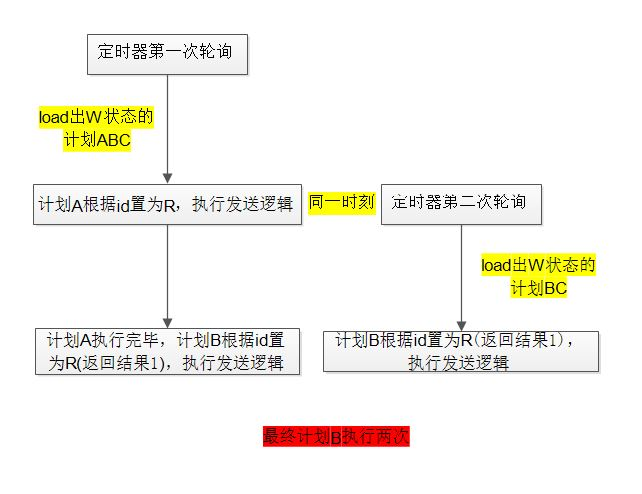
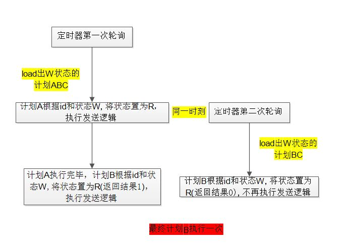

今天，一个生产环境的bug引发我写下这篇博客的想法。
背景说明：
公司有一个营销计划的功能模块是由我负责开发维护。计划模块是异步定时任务类型，用户通过产品设置了计划，利用定时器(附上定时器统一管理项目xxl-job的教程说明xxl-job)，在设定时刻进行计划的开始。
问题的发现是前阵子一个计划设置的优惠券被发送了两次，于是，在数据库里多番查找，最终发现是整个计划被执行了两次。
营销计划是通过定时器，每五分钟查出等待中(W)状态的计划，然后进行计划的发送(逻辑复杂)，并且将计划置为进行中(E)。然而，就是那段复杂的逻辑，导致上一次定时器轮询查出的W状态的计划还未完成，定时器的下一次轮询就又把同一个计划load出来，然后进行发送，导致了同个计划被执行了两次。
解决方案：
通过添加一个中间态:执行中(R)，来保证每个计划一旦被某次定时器的轮询load到，则事先更新成R状态，然后再进行复杂的发送逻辑，发送之后再更新为E状态。
需要注意的是，要确保更新成R状态成功之后，才能进行之后的计划执行业务。这样，一旦两次轮询通过W状态的条件查询都能load出同个计划的时候(即第一次轮询了多个计划，但是还未执行到计划B的时候，第二次定时器轮询load出了W状态的B，这样两次轮询都持有W状态的B计划)，只有能更新R状态成功的那次轮询可以执行后续逻辑。
问题再现：
- 在通过上述方案处理之后，本以为可以解决并发带来的问题。在今天，同样的问题再次出现，只能通过再次查看定时器的代码逻辑来查找问题所在。
再次折腾之后，发现之前的处理方案中，被我忽略了至关重要的更新条件。前面的处理方式只是将W状态的数据，通过id更新状态成R，与此同时，公司项目中使用了mybatis的通用mapper插件，进行更新，只要能记录存在，不管是否更新到数据，返回结果都是1。而之前又是根据返回结果是否是1进行后续计划发送逻辑，这就导致当前面说的两次定时器轮询都持有W状态的B计划的情况，这两次轮询对计划更新成R状态的时候都是返回1，就都进行了后续逻辑。 - 于是，在更新的时候，不能只是根据id进行更新，而是根据id加上W状态作为条件进行更新，才能保证正确的返回结果。
- 这次是踩了坑，也学到了，在进行数据库增删改的操作，要十分注意并发问题的处理方式，一些必要的条件不可缺少。
图示：
下面两张图展示一下，两次解决方案之后，计划的执行流程：
不根据W状态做条件的方案:
根据W状态做条件的方案:
